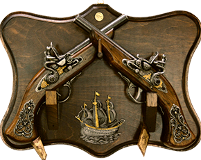

Мужской интерьер
Как правило, когда речь идет о создании интерьера, подразумевают универсальный вариант, т.е. помещение, в котором будет комфортно всем членам большой семьи. Этой теме посвящено множество статей в специализированных журналах и Сети. Мы же сегодня займемся оформлением помещения, в котором живет один человек, и этот человек - мужчина.
Дизайнеры говорят, что нет как такового универсального мужского интерьера, поскольку помещение всегда оформляют в соответсвии со вкусами, желаниями и предпоятениями хозяина. Тем не менее у квартир холостяков есть особенности, которые вряд ли встретишь в интерьере, где живут женщины.
Стиль
Представители сильной половины человечества ценят простоту и лаконичность. Именно поэтому оформить интерьер разумно в стиле лофт, хай-тек, минимализм.
Цвет
Мужской интерьер отличает преобладание спокойной палитры. В квартире холостяка не должно быть кричащих оттенокв. Оптимальными цветами считаются коричневый, серый, кирпичный, черный, зелёный и синий.
Последние идеально подойдут в качестве акцентных. К примеру, яркими пятнами могут оказаться стулья для гостинной. Слишком светлая мужская комната - это скорее исключение, нежели правило.
Мебель
Все мужчины прагматики, поэтому и мебель в их квартире должны быть соответствующей, т.е. максимально функциональной. Чтобы избежать беспорядка следует организовать продуманную систему хранения. Так, вместо открытых полок лучше обустроить скрытые ниши, за дверьми которых удастся спрятать массу нужного и ненужного в быту.
Безрассудно тратить квадратные сантиметры свободной площади, заставляя помещение лишней мебелью. Как правило, мужчинам достаточно большой кровати из массива дерева, раскладного дивана, компьютерного стола с удобным креслом и стола на кухне. Отличным решением станет организовать гардероб вместо традиционного шкафа для одежды, ведь тогда по утрам не придется утюжить рубашки, брюки и пиджаки - они аккуратно будут развешаны.
Фактуры
Никаких воздушных тюлей, подушек с оборками на диване и пушистых ковров на полу в настоящем мужском интерьере быть не должно.
Лучшее напольное
покрытиеНатуральное дерево (паркет
или ламинатная доска)Наилучшая отделка
для стенДекоративная штукатурка, обнаженная
кирпичная кладка или бетонное полотноИдеальный обивочный
материал для диванаКожа или мешковина
Оптимальное
украшение оконТяжелые льняные портьеры
Декор
Без аксессуаров интерьер будет казаться незавершенным. Но в этом вопросе главное - мера.
В брутальном интерьере нет случайных элементов декора - любая картина, статуэтка и фотография
несут смысловую нагрузку и завершают общуюу коспозицию. Идеальным вариантом могут стать коллекция оружия, музыкальный инструмент, спортивный инвентарь, рога дикого животного
и т.п. Здесь нужно полагаться на собственный вкус
и образ жизни.